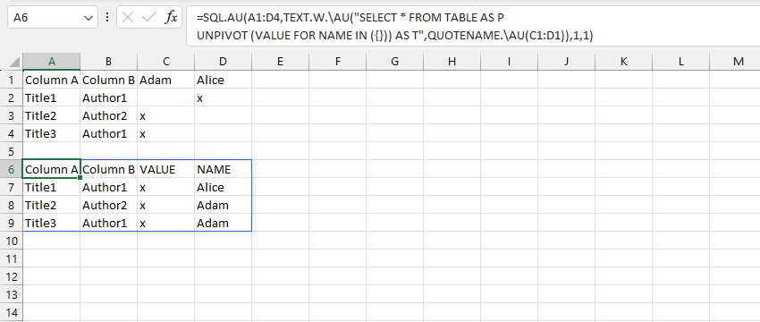

VD1: chuyển đổi kiểu dữ liệu với hàm UNPIVOT 2 cấp độ trước khi tổng hợp bằng hàm GROUP.

VD2: sử dụng truy vấn SQL với từ khóa UNPIVOT.
Related function
PIVOT Một triển khai tương tự với chức năng PIVOTTABLE.
GROUP Phân nhóm bảng dữ liệu dựa trên trường (cột) chỉ định, hỗ trợ tính toán tùy chỉnh.
Return to Home